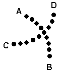

Luca Pavan
Examples: tones.zip
Introduction
In the second half of this century, most studies about the perception of tone sequences have been essentially due to the contribution of psychologists. Since these studies are in the field of perception, psychologists and researchers worked basically in an empirical way, experimenting their hypotheses on subjects. The results of these researches show some complex and fascinating features of hearing. Experiments about tone sequences were used especially sine waves or complex tones. The development of digital systems has, in many cases, simplified the procedures for generating sounds. The goal of this work is to provide a sort of library reproducing some experiments about the perception of tone sequences and some paradoxes, starting from basic instruments. At the same time the history and meaning of these experiments will be revisited. All the proposed experiments are realized by Csound, one of the most popular languages for sound synthesis, developed by Barry Vercoe at the Massachusetts Institute of Technology during the last ten years.
The perception of tone sequences
Several studies about the perception of tone sequences, starting from the 1950's, prove that the perception of a sound in a tone sequence depends on the preceding sounds and the following sounds in that sequence. The segregation of single tones in a pure tone sequence ABAB... occurs primarily if there is a sufficient frequency difference between the tones A and B, so that it is possible to perceive two simultaneous sequences, AA... and BB... These perceived sequences are also called streams (Bregman & Campbell, 1971). During the Baroque period to compose music using these effects of segregation was a common praxis, creating counterpoints with only one sequence of sounds. The example in fig. 1 comes from the Toccata and Fugue in D Minor (BWV 565) by J. S. Bach, in which two melodic patterns are perceived:
Fig. 1
The physiological explanation of these phenomena is in the known tendency of the human brain to organize some events in structures, as shown also by the Gestalt theories in the first half of this century. Many principles described by Gestalt psychologists in the visual field are analogous to mechanisms in the hearing system. Albert Bregman showed these analogies with two of these principles, called the principle of "belongingness" and the principle of "exclusive allocation" (Bregman, 1990). By the first principle the example in Fig. 2 shows two superimposed figures in which the dark portion of the line seems to belong to the dark figure.
Fig. 2
In fig. 3 is showed an ambiguous drawing which can be seen as a vase or two faces.
Fig. 3
Other Gestalt theories, called theories of grouping, described "how the brain creates mental patterns by forming connections between the elements of sensory input" (Bregman, 1990): the first condition of grouping is similarity (it occurs when two or more elements are perceived as a group because of their similarity, as in fig. 4a), a second is proximity (the perception of two or more elements as a group because of their proximity, as in fig. 4b), a third is called "good continuation" (it occurs when some elements are perceived as a group because of the same given direction, as in fig. 4c).
Similarity
Fig. 4a
Proximity
Fig. 4b

Good Continuation
Fig. 4c
The perception of streams in tone sequences is stronger when the rate of tones increases, though it is difficult to say which time intervals are involved in formation of streams. Miller and Heise were the first to investigate the formation of streams in the particular case of trills: they discovered that a rapid trill is perceived as two streams when the frequency distance between the two tones is more than an interval corresponding to 1/7 of an octave. The part of transition was called the trill threshold (Miller & Heise, 1950).
Leon van Noorden realized some sound examples at the Eindhoven University of Technology, in which some different levels in the perception of tone sequences are shown (van Noorden, 1975). These levels are called temporal coherence, fission and fusion. All the experiment were conceived with pure tones and complex tones. If a tone sequence is perceived as a coherent whole the result is temporal coherence. The first example proposed by van Noorden is an alternating tone sequence of 10 tones per second with tone interval of 1 semitone (fig. 5).
Fig. 5
A simple Csound orchestra can simulate this experiment, as shown below:
;Csound Orchestra ;Basic instrument for tone sequences sr = 44100 kr = 44100 ksmps = 1 nchnls = 1 instr 1 iamp = ampdb(p4) ifreq = p5 irate = p6 ifun = p7 kamp oscili iamp, irate, ifun asig oscil kamp, ifreq, 1 out asig endin --------------------------------------------------------------------------------- ;score f1 0 256 10 1 f2 0 512 7 0 103 1 50 1 103 0 256 0 f3 0 512 7 0 256 0 103 1 50 1 103 0 ;ins start dur amp freq rate fun i1 0 10 80 1000 5 2 i1 0 10 80 1059 5 3 endin
If the tone interval is changed, e. g. 20 semitones, the sequence is not perceived as a whole, in such a case the result is an example of fission, which consists in perceiving two separate streams (fig. 6).
Fig. 6
In the Csound score the frequencies of the two tones can be set e. g. to 1000 Hz and 3040 Hz:
;Score ;sinus wave: f1 0 256 10 1 ;amplitude envelopes: f2 0 512 7 0 103 1 50 1 103 0 256 0 f3 0 512 7 0 256 0 103 1 50 1 103 0 ;ins start dur amp freq rate fun i1 0 10 80 1000 5 2 i1 0 10 80 3040 5 3 endin
In this experiment the listener has an active role: he can direct the attention to the stream of high tones or to the stream of low tones.
The third phenomenon observed by van Noorden is called fusion: it is perceived in fast tone sequences in which there is a small interval between the two tones. These sequences are perceived like a continuous frequency modulation. This experiment can be simulated augmenting the rate of the tones in the Csound score and setting the frequencies e. g. to 1000 Hz and 1040 Hz:
;Score f1 0 256 10 1 f2 0 512 7 0 103 1 50 1 103 0 256 0 f3 0 512 7 0 256 0 103 1 50 1 103 0 ;ins start dur amp freq rate fun i1 0 10 80 1000 8 2 i1 0 10 80 1040 8 3 endin
There is a distinction between a temporal coherence boundary and a fission boundary (van Noorden, 1977). The temporal coherence boundary can be, in the simplest case, the largest frequency interval between the two tones in which the subject can still hear the alternation between A and B, the fission boundary can be the smallest frequency interval in which the streams AA... and BB... can be heard. It was observed that the temporal coherence boundary increases starting from 3 semitones (the critical band) to 15 semitones at a rate of 10 tones per sec. Intervals greater than 15 semitones give the presence of fission (fig. 7). It's possible to realize experiments to find the boundaries of temporal coherence and fission changing the frequencies of the two tones in the Csound score.
Fig. 7
It is possible to have temporal coherence and fission at the same time: this happens experimenting with involving tone sequences ABA ABA. Van Noorden carried out such an experiment, where the tempo of the tones B is half of the tones A, but the pitch of the tones B was fixed, while the tones A move gradually from an octave above B to an octave below B, then up again to the higher octave. This example give different kinds of perceived phenomena: first the listener perceives a fission; then, in the cross-over point between A and B a temporal coherence which produces a sort of "gallop" rhythm, and finally back to fission (fig. 8). This succession is repeated if the tones A move up at the higher octave.
Fig. 8
The Csound code of this experiment is showed below (it is also possible to hear some combination tones):
; Csound orchestra sr = 44100 kr = 44100 ksmps = 1 nchnls = 2 instr 1 iamp = ampdb(p4) ifreq = p5 irate = p6 ifun = p7 ifun2 = p8 kamp oscili iamp, irate, ifun kglis oscili 1200, 1/p3, ifun2 asig oscil kamp, ifreq + kglis, 1 outs asig, asig endin ----------------------------------------------------- ;score f1 0 512 10 1 f4 0 512 7 0 0 1 256 0 256 1 ;"dummy" function f5 0 512 7 0 1 512 1 ;function for tones A f6 0 512 7 0 10 0 49 1 15 1 49 0 276 0 49 1 15 1 49 0 ;function for tones B f7 0 512 7 0 133 0 93 1 60 1 93 0 133 0 ;ins start dur amp freq rate fun1 fun2 i1 0 40 80 800 5 6 4 i1 0 40 80 1000 2.5 7 5 endin
Van Noorden also produced some experiments also with sequences containing pure tones and complex tones. A fission occurs in fast sequences where pure tones are alternated with complex tones of the same pitch but with missing fundamentals. The same result is obtained by sequences of two complex tones, both with the same pitch but without contiguous components. These experiments can be simulated with Csound using a function which generates complex tones. In the case of alternated pure tones and complex tones, demonstrating a fission example, the Csound code can be like this:
;Csound orchestra sr = 44100 kr = 44100 ksmps = 1 nchnls = 1 instr 1 iamp = ampdb(p4) ifreq = p5 irate = p6 ifun = p7 ifun2 = p8 kamp oscili iamp, irate, ifun asig oscil kamp, ifreq, ifun2 out asig endin --------------------------------------------- ;score f1 0 256 10 1 f2 0 512 7 0 103 1 50 1 103 0 256 0 f3 0 512 7 0 256 0 103 1 50 1 103 0 f4 0 512 10 3 4 5 6 7 8 9 10 11 12 ;ins start dur amp freq rate fun fun2 i1 0 10 80 200 5 2 1 i1 0 10 80 200 5 3 4 endin
Temporal coherence is obviously perceived if the two complex tones have contiguous frequency components and the same pitch. It is also perceived if a distance of one octave occurs between the two tones.
In a tone sequence of pure tones and complex tones in which the frequency components are contiguous a temporal coherence is perceived between the pure tone and one component of the complex tone, but the tempo of the pure tones seems to be doubled.
In other experiments van Noorden utilizes tone sequences in which the amplitude of tones is controlled. Fission is produced in a sequence in which the tones B are louder than the tones A: the listener will hear the tones A sounding like an echo of B. But a temporal coherence can be heard if the amplitude difference is less. These two examples are easily generated by Csound to vary the amplitude of tones. The following Csound code shows a fission produced by a great amplitude difference (15 dB) between the tones A and B:
;Csound orchestra sr = 44100 kr = 44100 ksmps = 1 nchnls = 1 instr 1 iamp = ampdb(p4) ifreq = p5 irate = p6 ifun = p7 kamp oscili iamp, irate, ifun asig oscil kamp, ifreq, 1 out asig endin ----------------------------------- ;score f1 0 256 10 1 f2 0 512 7 0 103 1 50 1 103 0 256 0 f3 0 512 7 0 256 0 103 1 50 1 103 0 ;ins start dur amp freq rate fun i1 0 10 85 1000 5 2 i1 0 10 70 1000 5 3 endin
Increasing the amplitude of the tones B a temporal coherence is produced, as in the following:
;score f1 0 256 10 1 f2 0 512 7 0 103 1 50 1 103 0 256 0 f3 0 512 7 0 256 0 103 1 50 1 103 0 ;ins start dur amp freq rate fun i1 0 10 85 1000 5 2 i1 0 10 83 1000 5 3 endin
In 1977 van Noorden described also another effect connected to the amplitude of tones B in a tone sequences ABAB..., named roll effect (van Noorden, 1977): if the rate of the tones is faster than 12 tones per second, given a sequence in which the A tones are louder than the B tones, the listener perceives only the stream of A tones, but it is perceived in two parts, one louder than the other. The listener cannot direct his attention to tones that are too fast because of the physiological structure of the hearing system.
Another effect investigated by van Noorden is the passage from temporal coherence to fusion in a random tone sequence. This passage is heard when the tempo of the sequence moves, for example, from 10 to 20 tones per second. The Csound example can be like this:
sr = 44100 kr = 44100 ksmps = 1 nchnls = 1 instr 1 iamp = p4 ifreq = p5 irate = p6 ifun = p7 krate oscili 10, 1/p3, 3 kamp oscili iamp, irate + krate, ifun kfreq randh 59, p6 + krate asig1 oscil kamp, ifreq + kfreq, 1 asig butterlp asig1, 1800 out asig endin ---------------------------------------- ;score f1 0 256 10 1 f2 0 512 7 0 30 1 452 1 30 0 f3 0 512 7 0 512 1 ;ins start dur amp freq rate fun i1 0 10 80 1000 5 2 endin
Changing the distance between the tones (e. g. 20 semitones), with a tempo of about 20 tones per second, produces a fission; when the tempo decreases, it is also possible to hear a temporal coherence, like in this example:
;Csound orchestra sr = 44100 kr = 44100 ksmps = 1 nchnls = 1 instr 1 iamp = ampdb(p4) ifreq = p5 irate = p6 ifun = p7 krate oscili 10, 1/p3, 3 kamp oscili iamp, irate + krate, ifun kfreq randh 3174, p6 + krate asig1 oscil kamp, ifreq + kfreq, 1 asig butterlp asig1, 1800 out asig endin ---------------------------------------- ;score f1 0 256 10 1 f2 0 512 7 0 30 1 452 1 30 0 f3 0 512 7 0 0 1 512 0 ;ins start dur amp freq rate fun i1 0 10 80 1000 5 2 endin
The same result occurs in short sequences with only two tones at a distance of one semitone: if the rate of the pair of tones moves, for example, from 10 tones to more than 20 tones per second a fusion is produced, like in this example:
sr = 44100 kr = 44100 ksmps = 1 nchnls = 1 instr 1 iamp = ampdb(p4) ifreq = p5 ifun = p6 kamp oscili iamp, 1/p3, ifun asig oscil kamp, ifreq, 1 out asig endin ----------------------------------------- f1 0 256 10 1 f2 0 512 7 0 30 1 452 1 30 0 ;ins start dur amp freq fun i1 0 .1 80 1059 2 i1 + . . 1000 . i1 1 .045 . 440 . i1 + . . 466 . i1 2 . . 1271 . i1 + . . 1200 . endin
With more than 20 tones per second and a distance of 20 semitones the tones seem to be simultaneous and it is difficult to perceive in which direction the pitch moves, like here:
sr = 44100 kr = 44100 ksmps = 1 nchnls = 1 instr 1 iamp = ampdb(p4) ifreq = p5 ifun = p6 kamp oscili iamp, 1/p3, ifun asig oscil kamp, ifreq, 1 out asig endin ------------------------------------------ f1 0 256 10 1 f2 0 512 7 0 30 1 452 1 30 0 ;ins start dur amp freq fun i1 0 .035 80 3174 2 i1 + . . 1000 . i1 1 . . 440 . i1 + . . 1396 . i1 2 . . 3809 . i1 + . . 1200 . endin
Other interesting aspects of tone sequences concern the position of tones in the time domain. If in the tone sequence ABAB... the position of B is gradually shifted, a change of rhythm can be heard. Van Noorden demonstrated also that it is difficult to follow a tone sequence through a cross-over of the tones A and B. The avoidance of cross-over between voices is also a rule prescribed by counterpoint theory.
Binaural hearing and pitch paradoxes
Remarkable studies about the perception of musical sounds were made since the early 1960's, but there have been different point of views. Some have interpreted the results as proving that the right hemisphere of human brain is specialized for music perception and the left hemisphere for language (Kimura, 1964-73; Spellacy 1970). The apparent superiority of the right ear for speech sounds would be due to the better connection between that ear and the left brain hemisphere. Each brain hemisphere would receive information from the nervous system primarily from the opposite half of the body. The left ear superiority seemed evident in non-speech sounds. Other studies gave different results, and found no ear differences. Some studies found a right ear superiority for musicians and a left ear superiority in nonmusicians in recognition of melodic patterns (Johnson, 1977). These contradictions show that the brain could activate different parts of the neural system in auditory perception, depending on a variety of factors. A general tendency in the strategies of the hearing system was described according to the hemisphere of brain: the left hemisphere (dominant) is specialized in analytical processing, the right hemisphere (nondominant) in "holistic" or "Gestalt" processing, although this mechanism is not yet clear (Deutsch, 1982).
Fig. 9 (from Deutsch, 1982)
The asymmetry of brain is important in the perception of some auditory illusions described by Diana Deutsch in 1974. These illusions are perceived wearing headphones.
The octave illusion occurs in a sequence of tones at a distance of about an octave, in which one tone is presented to the right ear and the other tone to the left, alternating the tones between the two ears (when a tone is on the left ear the other is to the right ear and vice versa, as shown in fig. 9): most of the subjects perceive the high tone to the right ear and the low tone to the left ear, even if the headphones are in reversed position. This effect is due to a selection mechanism for pitch and localization in human hearing system. The frequencies in one ear are followed by the same pitch, the other frequencies are suppressed. A Csound code to realize this paradox can be like in the following example:
;Csound orchestra sr = 44100 kr = 44100 ksmps = 1 nchnls = 2 instr 1 iamp = ampdb(p4) ifreq1 = p5 ifreq2 = p6 ifun = p7 kamp oscili iamp, 1/p3, ifun asig1 oscil kamp, ifreq1, 1 asig2 oscil kamp, ifreq2, 1 outs asig1, asig2 endin --------------------------------------------- ;score f1 0 256 10 1 f2 0 512 7 0 30 1 452 1 30 0 ;ins start dur amp freq1 freq2 fun i1 0 .25 80 800 400 2 i1 + . . 400 800 . i1 + . . 800 400 . i1 + . . 400 800 . i1 + . . 800 400 . i1 + . . 400 800 . i1 + . . 800 400 . i1 + . . 400 800 . i1 + . . 800 400 . i1 + . . 400 800 . i1 + . . 800 400 . i1 + . . 400 800 . i1 + . . 800 400 . i1 + . . 400 800 . i1 + . . 800 400 . i1 + . . 400 800 . i1 + . . 800 400 . i1 + . . 400 800 . i1 + . . 800 400 . i1 + . . 400 800 . endin
In another illusion called scale illusion a set of tones of a major scale is presented ascending and descending, but when a tone is presented to one ear, the following tone is presented to the other ear and vice versa. The perceived result of this stimulus is shown in fig. 10.
Fig. 10 (from Deutsch, 1982)
This experiment shows the mechanism of grouping of the auditory system, correlated to the law of proximity. The stimulus can be produced with the following Csound code (in which the frequencies are expressed in an octave and a pitch class representation: for instance, 8.00 stands for middle C, 8.01 for C#, 9.00 for the C above etc.):
;Csound orchestra sr = 44100 kr = 44100 ksmps = 1 nchnls = 2 instr 1 iamp = ampdb(p4) ifreq1 = p5 ifreq2 = p6 ifun = p7 kamp oscili iamp, 1/p3, ifun asig1 oscil kamp, cpspch(p5), 1 asig2 oscil kamp, cpspch(p6), 1 outs asig1, asig2 endin ----------------------------------------- ;score f1 0 256 10 1 f2 0 512 5 .001 40 1 432 1 40 .001 ;ins start dur amp freq1 freq2 fun i1 0 .25 80 8.00 9.00 2 i1 + . . 8.11 8.02 . i1 + . . 8.04 8.09 . i1 + . . 8.07 8.05 . i1 + . . 8.05 8.07 . i1 + . . 8.09 8.04 . i1 + . . 8.02 8.11 . i1 + . . 9.00 8.00 . i1 + . . 8.00 9.00 . i1 + . . 8.11 8.02 . i1 + . . 8.04 8.09 . i1 + . . 8.07 8.05 . i1 + . . 8.05 8.07 . i1 + . . 8.09 8.04 . i1 + . . 8.02 8.11 . i1 + . . 9.00 8.00 . endin
Both the experiments of scale illusion and octave illusion produce in the listener a tendency to hear the higher tones in the right ear. This occurs only for right-handed subjects: left-handed generally perceives the higher tones in the left ear. The neurological point of view is that in the dominant hemisphere there is more activity in the neural units for the high frequencies, while in the non-dominant hemisphere there is more activity in the neural units for lower frequencies.
Conclusions
Experiments on the perception of tone sequences show some aspects and limits in the human auditory system, which are strongly related to the brain structure and the physiology of the neural system. Unfortunately the knowledge of the human brain is limited, though in the last thirty years much progress has been made. These experiments are important to understand the behaviour of the auditory system in different conditions, to a greater knowledge of the human physiology.
Links
http://alindsay.www.media.mit.edu/~dpwe/AUDITORY/
http://www.psych.mcgill.ca/labs/auditory/laboratory.html
http://www.york.ac.uk/inst/ctipsych/resources/perc.html#PER03
References
Bregman, A. S. 1973. "Visual Stream Segregation." Perception and Psychophysics 13:451-454.
Bregman, A. S. 1990. "Auditory Scene Analysis - The Perceptual Organization of Sound". Cambridge, MA: MIT Press.
Bregman, A. S., and J. Campbell. 1971. "Primary Auditory Stream Segregation and Perception of Order in Rapid Sequences of Tones." Journal of Experimental Psychology 89:244-249.
Dannembring, G. L., and A. S. Bregman. 1978. "Streaming vs. Fusion of Sinusoidal Components of Complex Tones." Perception and Psychophysics 24:369-376.
Deutsch, D. 1974. "An Auditory Illusion." Nature 251:307-309.
Deutsch, D. 1975. "Two-channel listening to Musical Scales." Journal of the Acoustical Society of America 57:1156-1160.
Deutsch, D. 1975. "Musical Illusions." Scientific American 233(4):92-104.
Deutsch, D. 1982. "Grouping Mechanisms in Music", in D. Deutsch, ed., The Psychology of Music. New York: Academic Press, pp. 99-134.
Deutsch, D. 1992. "Paradoxes of Musical Pitch." Scientific American 267(2):88-95.
Gates, A., and J. L. Bradshow. 1977. "Music Perception and Cerebral Asymmetries." Cortex 13:390-401.
Kimura, D. 1973. "The Asymmetry of the Human Brain." Scientific American, 228(3):70-78.
McAdams S., and A. S. Bregman. 1979. "Hearing Musical Streams." Computer Music Journal 3(4):26-43.
Miller, G. A., and G. A. Heise. 1950. "The Trill Threshold." Journal of the Acoustical Society of America 22:637-638.
Murphy, E. H., and P. H. Venables. 1970. "The Investigation of Ear Asymmetry by Simple and Disjunctive Reaction-Time Tasks." Perception and Psychophysics 8:104-106.
Plomp R. 1964. "Rate of Decay of Auditory Sensation." Journal of the Acoustical Society of America 36:277-282.
Ramachandran V. S., and S. M. Anstis. 1983. "Perceptual Organization in Moving Patterns." Nature 304:529-531.
Risset, J.C. 1989. "Paradoxical Sounds." In Mathews, M.V., and J. R. Pierce, ed., Current Directions in Computer Music Research. Cambridge, MA: MIT Press, pp. 149-158.
Shanon, B. 1981. "Classification of Musical Information Presented to the Right and Left Ear." Cortex 17:583-596.
Springer, S. P. 1971. "Ear Asimmetry in a Dichotic Detection Task." Perception and Psychophysics 10:239-241.
Ten Hoopen, G., van Meurs G., and S. Akerboom. 1982. "The Perceived Tempi of Coherent and Streaming Tone Sequences." Perception and Psychophysics 31:256-260.
Van Noorden, L. P. A. S. 1975. "Temporal Coherence in the Perception of Tone Sequences." Ph.D. Dissertation, Technique Hogeschool, Eindhoven, The Netherlands, Pub. By The Institute of Perception Research, Eindhoven, The Netherlands.
Van Noorden, L. P. A. S. 1977. "Minimum Differences of Level and Frequency for Perceptual Fission of Tone Sequences ABAB." Journal of the Acoustical Society of America 61:1041-1045.
Vercoe, B. 1986. "Csound - A Manual for the Audio Processing System and Supporting Programs with Tutorials." (unpublished): MIT Media Lab.